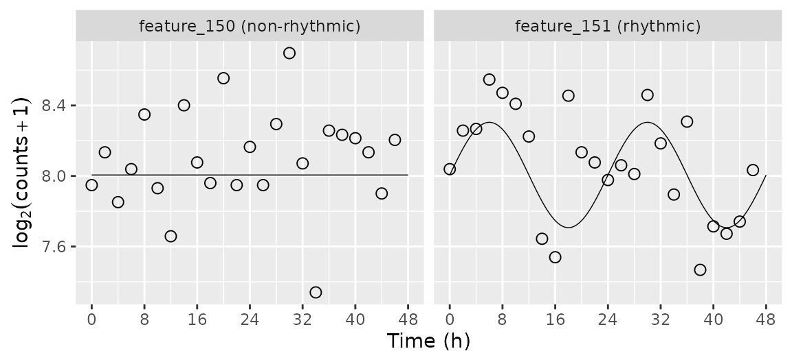
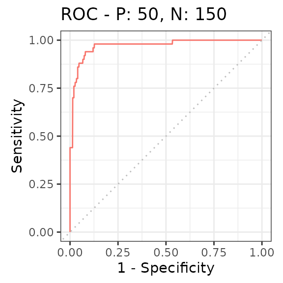

Using simphony to evaluate rhythm detection
2022-05-09
Source:vignettes/introduction.Rmd
introduction.Rmdsimphony is a framework for simulating rhythmic data, especially gene expression data. Here we show an example of using it to benchmark a method for detecting rhythmicity.
Load the packages we’ll use
Internally, simphony uses the data.table package, which provides an enhanced version of the standard R data.frame. We’ll use data.table for this example as well.
Simulate the data
Here we create a data.table called featureGroups that specifies the desired properties of the simulated genes. We want 75% of simulated genes to be non-rhythmic and 25% to have a rhythm amplitude of 1.1. Properties not specified in featureGroups will be given their default values.
Our simulated experiment will have 200 genes. Expression values will be sampled from the negative binomial family, which models read counts from next-generation sequencing data. The interval between time points will be 2 (default period of 24), with one replicate per time point. We also use the default time range of our simulated data points of between 0 and 48 hours.
set.seed(44)
featureGroups = data.table(fracFeatures = c(0.75, 0.25), amp = c(0, 0.3))
simData = simphony(featureGroups, nFeatures = 200, interval = 2, nReps = 1, family = 'negbinom')The output of simphony has three components: abundData, sampleMetadata, and featureMetadata. abundData is a matrix that contains the simulated expression values. Each row of corresponds to a gene, each column corresponds to a sample. Since we sampled from the negative binomial family, all expression values are integers.
kable(simData$abundData[1:3, 1:3])| sample_01 | sample_02 | sample_03 | |
|---|---|---|---|
| feature_001 | 282 | 154 | 181 |
| feature_002 | 213 | 310 | 200 |
| feature_003 | 304 | 294 | 273 |
sampleMetadata is a data.table that contains the condition (cond) and time for each sample. Here we simulated one condition, so cond is 1 for all samples.
kable(simData$sampleMetadata[1:3])| sample | cond | time |
|---|---|---|
| sample_01 | cond_1 | 0 |
| sample_02 | cond_1 | 2 |
| sample_03 | cond_1 | 4 |
featureMetadata is a data.table that contains the properties of each simulated gene in each condition. The group column corresponds to the row in featureGroups to which the gene belongs.
kable(simData$featureMetadata[149:151, !'dispFunc']) %>%
kable_styling(font_size = 12)| cond | group | feature | fracFeatures | amp | amp0 | phase | period | rhyFunc | base | base0 |
|---|---|---|---|---|---|---|---|---|---|---|
| cond_1 | 1 | feature_149 | 0.75 | function (m) , x | 0.0 | 0 | 24 | .Primitive(“sin”) | function (x) , defaultValue | 8 |
| cond_1 | 1 | feature_150 | 0.75 | function (m) , x | 0.0 | 0 | 24 | .Primitive(“sin”) | function (x) , defaultValue | 8 |
| cond_1 | 2 | feature_151 | 0.25 | function (m) , x | 0.3 | 0 | 24 | .Primitive(“sin”) | function (x) , defaultValue | 8 |
Plot the simulated time-course for selected genes
Here we plot the simulated time-course for a non-rhythmic gene and a rhythmic gene. We use the mergeSimData function to merge the expression values, the sample metadata, and the gene metadata.
fmExample = simData$featureMetadata[feature %in% c('feature_150', 'feature_151')]
dExample = mergeSimData(simData, fmExample$feature)We also want to compare the simulated expression values with their underlying distributions over time, for which we can use the getExpectedAbund function. Since we sampled from the negative binomial family, the resulting mu column corresponds to the expected log2 counts.
dExpect = getExpectedAbund(fmExample, 24, times = seq(0, 48, 0.25))Then it all comes together with ggplot.
dExample[, featureLabel := paste(feature, ifelse(amp0 == 0, '(non-rhythmic)', '(rhythmic)'))]
dExpect[, featureLabel := paste(feature, ifelse(amp0 == 0, '(non-rhythmic)', '(rhythmic)'))]
ggplot(dExample) +
facet_wrap(~ featureLabel, nrow = 1) +
geom_line(aes(x = time, y = log2(2^mu + 1)), size = 0.25, data = dExpect) +
geom_point(aes(x = time, y = log2(abund + 1)), shape = 21, size = 2.5) +
labs(x = 'Time (h)', y = expression(log[2](counts + 1))) +
scale_x_continuous(limits = c(0, 48), breaks = seq(0, 48, 8))
Detect rhythmic genes
We can use the limma package to detect rhythmic genes based on a linear model that corresponds to cosinor regression.
sampleMetadata = copy(simData$sampleMetadata)
sampleMetadata[, timeCos := cos(time * 2 * pi / 24)]
sampleMetadata[, timeSin := sin(time * 2 * pi / 24)]
design = model.matrix(~ timeCos + timeSin, data = sampleMetadata)Here we follow the typical limma workflow: fit the linear model for each gene, run empirical Bayes, and extract the relevant summary statistics. We pass lmFit the log2 transformed counts.
Evaluate accuracy of rhythmic gene detection
First we merge the results from limma with the known amplitudes from featureMetadata.
rhyLimma$feature = rownames(rhyLimma)
rhyLimma = merge(data.table(rhyLimma), simData$featureMetadata[, .(feature, amp0)], by = 'feature')We can plot the distributions of p-values of rhythmicity for non-rhythmic and rhythmic genes. P-values for non-rhythmic genes are uniformly distributed between 0 and 1, as they should be under the null hypothesis. P-values for rhythmic genes, on the other hand, tend to be closer to 0.
ggplot(rhyLimma) +
geom_jitter(aes(x = factor(amp0), y = P.Value), shape = 21, width = 0.2) +
labs(x = expression('Rhythm amplitude ' * (log[2] ~ counts)), y = 'P-value of rhythmicity')Finally, we can summarize the ability to distinguish non-rhythmic and rhythmic genes using a receiver operating characteristic (ROC) curve (here we use the precrec package).
rocprc = evalmod(scores = -log(rhyLimma$P.Value), labels = rhyLimma$amp0 > 0)
autoplot(rocprc, 'ROC')